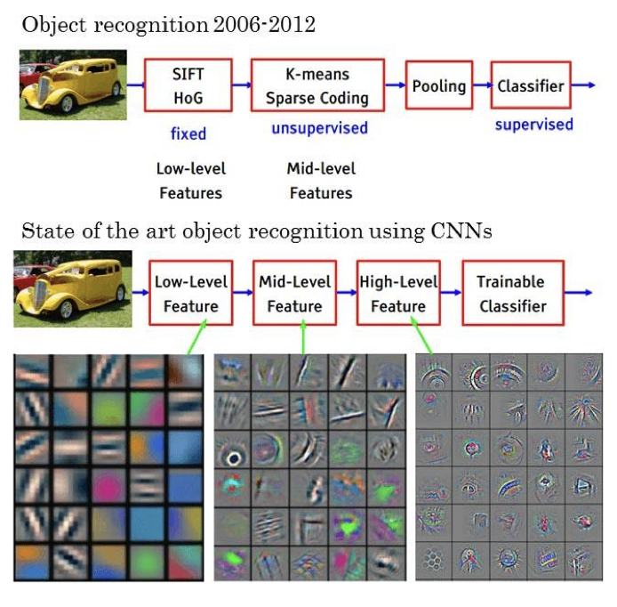

1. The Old Pipeline (2006–2012): Hand-Engineered Features + Shallow Learning
Before deep learning, the computer vision pipeline looked like this:
Low-level features were hand-designed by humans.
Examples:
- SIFT (Scale-Invariant Feature Transform)
- HOG (Histogram of Oriented Gradients)
These algorithms explicitly defined how to detect edges, corners, gradients, etc.
→ The computer did not learn these; they were fixed.
Unsupervised mid-level feature building.
Methods like:
- K-means clustering
- Sparse coding
were used to combine low-level features into higher-level patterns.
Pooling was used to add some spatial invariance.
A shallow classifier (usually SVM) was trained on top of those features.
Key Point:
- Feature extraction and classification were separate.
- Only the classifier learned from data.
- The features themselves were not learnable.

Old hand-engineered pipeline (top) vs. end-to-end learned CNN pipeline (bottom)
2. The New Pipeline (CNNs): End-to-End Learned Features
With CNNs, the entire pipeline becomes one trainable system:
Low-level features (edges, colors, simple textures) are learned automatically by the first convolutional layers.
Mid-level features (corners, motifs, parts of objects) emerge in deeper layers.
High-level features (object parts, semantic patterns) appear even deeper.
The final classifier is learned jointly with all earlier layers.
Key Point:
- All feature stages learn themselves from data.
- No human-designed SIFT/HOG.
- No separate feature + classifier pipeline.
3. What Actually Changed? (In One Sentence)
We stopped hand-engineering features and instead let neural networks learn the feature hierarchy directly from raw pixels.
4. Why This Was a Revolution
Old Vision (SIFT/HOG)
- ✗ Features were rigid and brittle.
- ✗ Could not scale to huge variability (viewpoints, textures, lighting, deformable objects).
- ✗ Performance plateaued around 70% on ImageNet-like benchmarks.
CNN Vision (AlexNet → ResNet → Today)
- ✓ Features adapt automatically to the dataset.
- ✓ Much deeper, more expressive models.
- ✓ Huge leap in accuracy (AlexNet improved ImageNet top-5 error by ~15 percentage points in one year).
- ✓ End-to-end training unlocked representation learning.
The Bottom Line
The deep learning revolution wasn't just about better algorithms—it was about fundamentally changing who decides what features matter. Instead of computer vision researchers hand-crafting SIFT and HOG descriptors, we let the data and gradient descent figure it out. This shift from manual feature engineering to learned representations is what made modern computer vision possible.